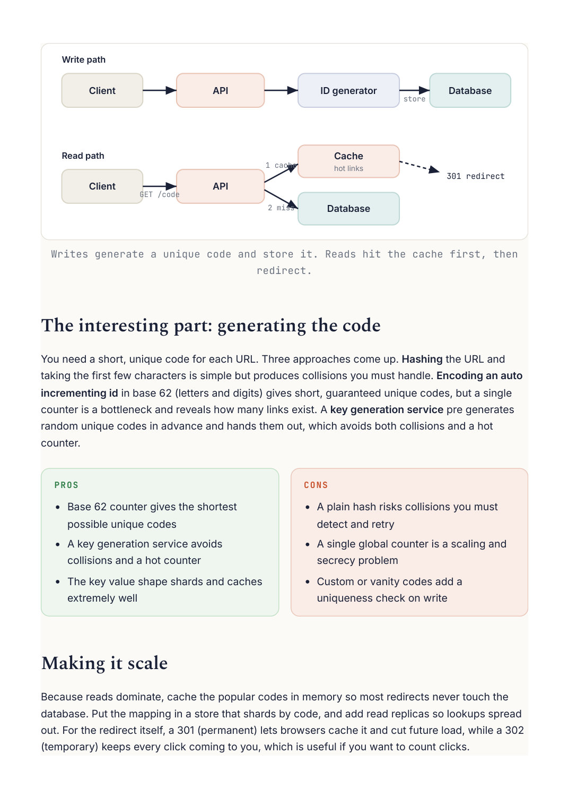

System Design
Chapter 28
Design: URL shortener
D E S I G N C A S E S T U D I E S
shortener
This is the classic warm up design. It looks tiny, but it touches unique ID generation, heavy read caching, and horizontal scale, so it is a great place to practice the whole framework end to end.
Requirements and scale
Functionally, take a long URL and return a short code, and when someone visits the short code, redirect them to the original. Non functionally, it is extremely read heavy, since a link is created once but clicked many times, and redirects must be fast. That read to write ratio drives the whole design toward caching and read replicas.
The API and data model
Two endpoints cover it: a write, POST with the long URL that returns a short code, and a read, GET on the short code that returns a redirect. The data is just a mapping: short code to long URL, plus a creation time. It is a simple key value shape, which means it shards and caches beautifully.

Writes generate a unique code and store it. Reads hit the cache first, then You need a short, unique code for each URL. Three approaches come up. Hashing the URL and taking the first few characters is simple but produces collisions you must handle. Encoding an auto incrementing id in base 62 (letters and digits) gives short, guaranteed unique codes, but a single counter is a bottleneck and reveals how many links exist. A key generation service pre generates random unique codes in advance and hands them out, which avoids both collisions and a hot Because reads dominate, cache the popular codes in memory so most redirects never touch the database. Put the mapping in a store that shards by code, and add read replicas so lookups spread out. For the redirect itself, a 301 (permanent) lets browsers cache it and cut future load, while a 302 (temporary) keeps every click coming to you, which is useful if you want to count clicks.
Going Deeper
Generating unique codes without a bottleneck
The tempting design, a single auto incrementing counter, becomes a hot spot that every write must pass through, and it quietly leaks how many links exist. The fix is to hand out ranges. A coordinator gives each app server a block of ids, say a million at a time, and each server then encodes ids from its own block into base 62 with no coordination per request. An alternative is a key generation service that pre generates random unique codes in advance and hands them out, which also removes collisions. Base 62 keeps the codes short by using digits together with upper and lower case letters. no single counter on the hot path App server 1 block 0 .. 1M ID coordinator App server 2 each encodes hands out blocks block 1M .. 2M its ids in base 62 App server 3 block 2M .. 3M Each server gets a block of ids up front and encodes locally, so no request waits on a shared counter. 3 0 1 V E R S U S 3 0 2 , A N D C O U N T I N G C L I C K S A 301 permanent redirect lets browsers cache the mapping, so future clicks skip your server entirely, which is fastest but means you cannot count those clicks. A 302 temporary redirect sends every click back through you, which is what you want if analytics on each visit matter.
The choice is a straight trade between speed and measurement.
Step By Step
The two paths through a URL shortener, one for creating a link and one for using it.
Creating a short link
The client sends the long URL to the API. 1 The service generates a unique short code, for example by encoding a counter in base 62. 2 It stores the mapping from code to long URL in the database. 3 It returns the short code, so the full short link is ready to share. 4 Using a short link A visitor requests the short code. 1 The service checks the cache first, since popular links are read constantly. 2 On a cache miss it looks up the code in the database and fills the cache. 3 It responds with a redirect to the original long URL, and the browser follows it. 4